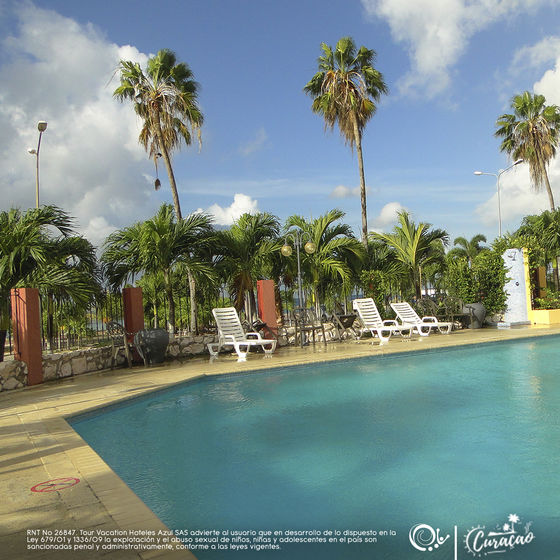

Terrace Restaurant Bar & Grill sirve platos especializados en culinaria italiana. El desayuno es servido a diario con panes, frutas, jugo y una bebida caliente. Se ofrece el servicio a las habitaciones.